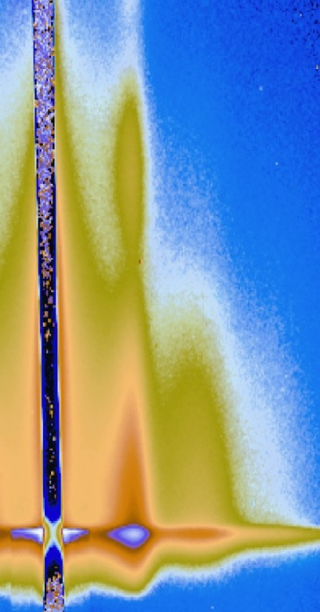

| GISAXS Clinics |
||
|  |
GISAXS
has the reputation of
being shrouded in mystery, in particular for students new to x-ray
scattering. For twenty years as a beamline scientist I have taught
students, postdocs, and faculty, how to use the technique, explained
the x-ray science behind it, and provided help with the analysis
including developing my own data processing software "GIXSpack" which is freely distributed on demand. I would be happy to teach users and beamline staff the big picture and the finer points of the technique. To give you a flavor, have a look at my GISAXS tutorial. DS |
|